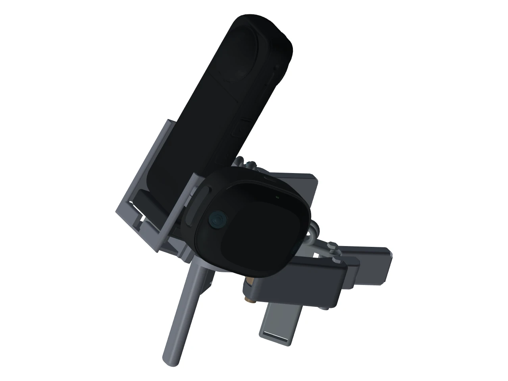

Flexiv Grav GN-01
Original camera and tracker geometry, the gripper linkage, and eight top-entry shoulder screws with flush countersunk heads.
Handheld robot teaching
Start both cameras and mark episodes in InstaDataCap.
Pepper sorting · 15.2 s
Original camera and tracker geometry, the gripper linkage, and eight top-entry shoulder screws with flush countersunk heads.

Original finger links and pads in the reconstructed jaw assembly, with the Insta360 X5 and HTC VIVE Ultimate Tracker fitted to the chassis.
The InstaUMI designs use the BSD 3-Clause license. The SolidWorks archives preserve the native designs. The STL packages include assembled models and individual parts in millimeters. Third-party reference geometry follows its upstream terms.
The camera display uses the supplied X5 scan calibrated to the published dimensions. The magnetic quick release is shown as a dimensional envelope. Insta360 X5 specifications